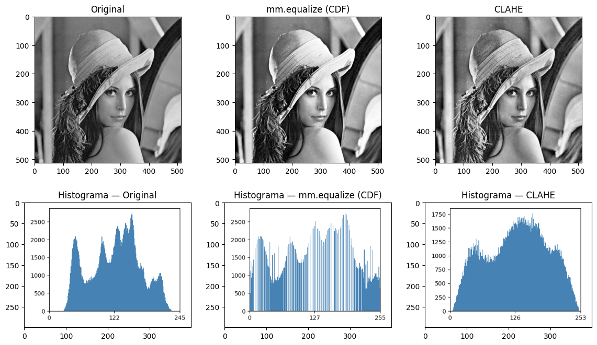
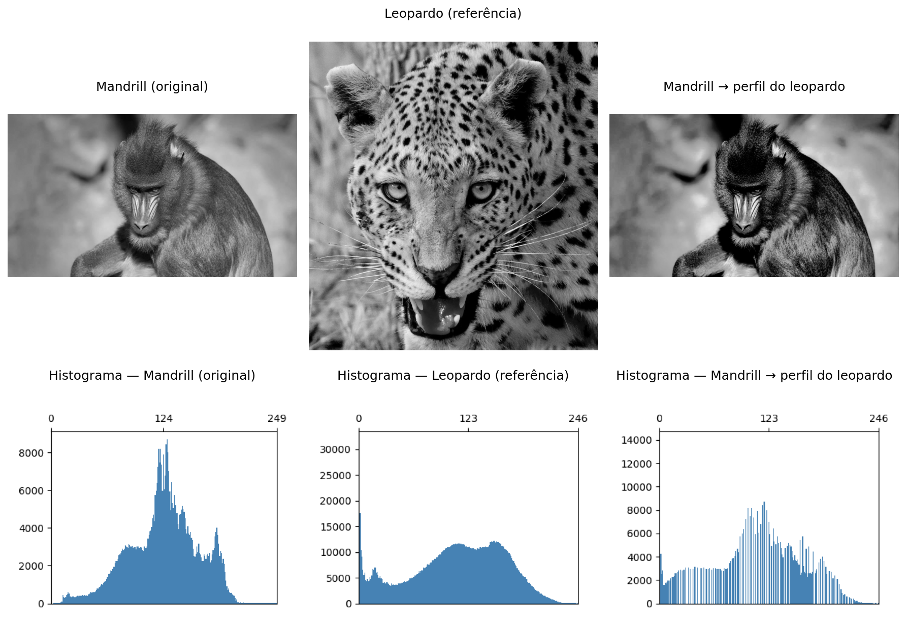
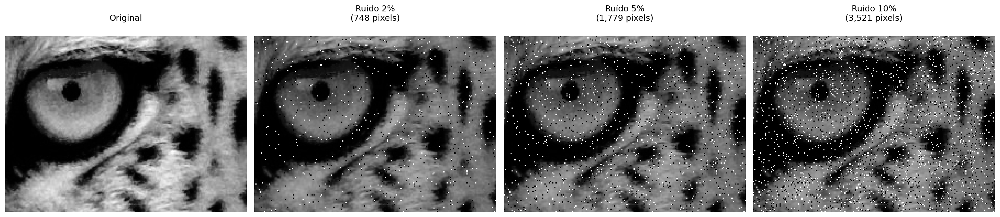

3Operações Espaciais: Intensidade, Histograma e Filtragem
Este capítulo aprofunda o processamento de imagens no domínio espacial, partindo da manipulação direta de pixels e histogramas para o realce de contraste, até a aplicação de filtros locais por convolução para suavização, redução de ruído e detecção de bordas. O objetivo é desenvolver a intuição matemática e computacional que sustenta grande parte dos algoritmos modernos de Visão Computacional.
3.1 Objetivos
Ao final deste capítulo, você será capaz de:
Manipular intensidade e pixels: Executar operações aritméticas saturadas (mm.addm, mm.subm) e lógicas bit a bit (mm.band, mm.bor, mm.bnot) para combinação e seleção de regiões de interesse (ROI), e aplicar alpha blending (mm.blend) para fusão ponderada de imagens;
Processar histogramas: Interpretar o histograma como diagnóstico tonal, aplicar equalização global (mm.equalize) e adaptativa (CLAHE), e realizar especificação de histograma para transferência de perfil tonal entre imagens;
Compreender fundamentos espaciais: Entender vizinhança, padding de borda, e a diferença entre correlação cruzada (mm.conv) e convolução — incluindo por que kernels assimétricos como Sobel produzem resultados distintos nas duas operações;
Aplicar filtragem de suavização: Utilizar o filtro de média (mm.conv com kernel uniforme) e o filtro Gaussiano (cv2.GaussianBlur) para redução de ruído, compreendendo a vantagem da ponderação radial e da separabilidade Gaussiana;
Aplicar filtragem de realce: Usar o Laplaciano (\(w_4\) e \(w_8\)) para realce isotrópico de bordas, o operador de Sobel para gradiente direcional (\(G_x\), \(G_y\), magnitude e direção), e o Unsharp Masking para amplificação controlada de alta frequência pelo parâmetro \(k\);
Utilizar filtros de ordem: Aplicar o filtro da mediana (cv2.medianBlur) para remoção eficaz de ruído sal e pimenta, compreendendo por que sua natureza não linear e robustez a outliers o tornam superior aos filtros lineares nesse cenário;
Resolver problemas práticos: Encadear técnicas em pipelines de pré-processamento (ex.: CLAHE → Gaussiano → Canny) e utilizar as funções da biblioteca morph.py (mm.conv, mm.histImg, mm.equalize, mm.drawImageKernel) para análise e visualização didática de cada etapa.
3.2 Operações em Nível de Intensidade
O nível mais elementar de processamento de imagens atua diretamente sobre os valores dos pixels, sem considerar vizinhança. Essas operações — chamadas de transformações de ponto (point operations) — são as mais rápidas computacionalmente e formam a base para técnicas mais complexas.
Formalmente, uma transformação de ponto pode ser descrita como:
\[
g(x,y) = T[f(x,y)]
\tag{3.1}\]
onde \(f(x,y)\) é a imagem de entrada, \(g(x,y)\) é a saída e \(T\) é uma função aplicada a cada pixel individualmente.
3.2.1 Preparando o Ambiente Prático
O bloco a seguir carrega o módulo morph.py do repositório.
import os, importlib, urllib.requestimport numpy as npimport matplotlib.pyplot as pltBASE_URL ="https://raw.githubusercontent.com/fzampirolli/pdi-vc/master/morph"for f in ["morph.py"]:ifnot os.path.exists(f): urllib.request.urlretrieve(f"{BASE_URL}/{f}", f)import morphimportlib.reload(morph)from morph import mmversion =getattr(morph, "__version__", "local_file")print(f"✅ Ambiente pronto. Módulo 'morph' carregado (versão: {version}).")
Como objeto de estudo ao longo deste capítulo, utilizaremos as imagens de vida selvagem apresentadas nas Figura fig-03-mandrill e Figura fig-03-leopardo. A partir delas, exploraremos operações espaciais sobre intensidade, histogramas e filtragem, analisando seus efeitos no realce, na suavização, na redução de ruído e na detecção de bordas, de modo a compreender os fundamentos matemáticos e computacionais do PDI.
Tipo PIL : <class 'PIL.JpegImagePlugin.JpegImageFile'> | Dimensões (x,y): (960, 540)
Tipo NumPy: <class 'numpy.ndarray'> | Dimensões [y,x,c]: (540, 960, 3)
Figura 3.1: Mandrill (Mandrillus sphinx) fotografado em ambiente natural na África do Sul. A imagem possui resolução de 500 px e contém metadados EXIF com coordenadas GPS aproximadas (-26.20473, 28.22662). Crédito: Carlos Guilherme Rodrigues (CC BY-SA 3.0).
3.2.2 Operações Aritméticas
Operações aritméticas entre imagens são amplamente usadas em PDI para combinar, comparar ou realçar informações. A subtração de imagens é especialmente poderosa para detectar diferenças entre dois quadros — por exemplo, na remoção de fundo estático em câmeras de vigilância:
\[
g(x,y) = f_1(x,y) - f_2(x,y)
\tag{3.2}\]
A adição saturada limita o resultado ao intervalo \([0, 255]\): valores acima de 255 são fixados em 255, evitando o overflow silencioso do tipo uint8 (ex.: \(200 + 100 = 44\) em vez de 300). A subtração saturada aplica o mesmo princípio pelo lado inferior: valores negativos são fixados em 0.
AvisoSaturação e overflow
Operações aritméticas em uint8 sofrem overflow silencioso: \(200 + 100 = 44\) (não 300). As funções mm.addm e mm.subm usam cv2.add e cv2.subtract, que realizam saturação automática. Para o blending, converta para float32 antes de operar e aplique np.clip(..., 0, 255).astype(np.uint8) ao final, pois a operação envolve pesos fracionários.
A Figura fig-03-aritmetica demonstra adição de uma constante (clareamento) e subtração de uma constante (escurecimento com saturação em 0).
Quando \(\alpha = 1\), obtém-se apenas a imagem \(f_1\); quando \(\alpha = 0\), apenas \(f_2\). Valores intermediários produzem uma transição suave entre ambas, sendo amplamente utilizados em composição de imagens, sobreposição de camadas, marcas d’água e efeitos de fusão visual.
Para que a combinação produza um resultado coerente, é necessário alinhar previamente as regiões de interesse das imagens. Na Figura fig-03-blend, utiliza-se um recorte do rosto do leopardo:
leo = img_gray_leo[250:-300, 100:-200]
e um recorte central da região facial do mandril:
mandrill = img_gray[100:400, 380:530]
As duas regiões são escolhidas de forma que olhos e estrutura facial permaneçam aproximadamente alinhados. Em seguida, o recorte do leopardo é redimensionado para coincidir com as dimensões do mandril antes da aplicação da mistura ponderada.
A operação é realizada em float32 para evitar problemas de overflow durante as operações aritméticas, seguida de clipping e conversão final para uint8.
Figura 3.4: Alpha blending entre recortes alinhados de mandrill e do leopardo (Figura fig-03-leopardo) para diferentes valores de α. Em α=1 vê-se apenas mandrill; em α=0, apenas o leopardo; valores intermediários fundem os olhares das duas imagens proporcionalmente.
3.2.4 Operações Lógicas e Máscaras Bit a Bit
As operações lógicas bit a bit (AND, OR e NOT) atuam diretamente sobre os bits de cada pixel e são a base para criação e aplicação de máscaras (masks) — imagens binárias com apenas 0 (preto) e 255 (branco) usadas para isolar Regiões de Interesse (ROI).
O comportamento de cada operação decorre da representação binária do 255 (11111111) e do 0 (00000000):
AND com a máscara: onde \(m = 255\), os bits originais são preservados; onde \(m = 0\), o pixel é zerado. Resultado: recorte da ROI. \[g(x,y) = f(x,y) \;\text{AND}\; m(x,y)
\tag{3.4}\]
OR com a máscara: onde \(m = 255\), o pixel é forçado a branco; onde \(m = 0\), o valor original é mantido. Resultado: iluminação da ROI.
NOT (sem máscara): inverte todos os bits (\(g = 255 - f\)), produzindo o negativo fotográfico da imagem.
A Figura fig-03-logica ilustra as três operações aplicadas à imagem do mandrill com uma máscara circular.
import cv2h, w = img_gray.shape# Máscara circular centrada na imagemmask_circ = np.zeros((h, w), dtype=np.uint8)cv2.circle(mask_circ, (w//2, h//2), min(h, w)//3-10, 255, -1)# Operações via morphimg_not = mm.bnot(img_gray) # NOT: negativo fotográficoimg_and = mm.band(img_gray, mask_circ) # img_gray & mask_circ: preserva apenas a ROI circularimg_or = mm.bor(img_gray, mask_circ) # img_gray | mask_circ: ilumina a região da máscaramm.show( [img_gray, img_and, img_or, img_not], titles=["Original", "AND (ROI circular)", "OR (ilumina ROI)", "NOT (negativo)"], cols=4)
Figura 3.5: Operações lógicas bit a bit com máscara circular: AND (isolamento da ROI), OR (iluminação da ROI) e NOT (negativo).
3.3 Histograma de Imagens
O histograma de uma imagem em tons de cinza é uma função discreta que descreve a distribuição de frequências das intensidades:
onde \(r_k\) é o \(k\)-ésimo nível de intensidade, \(n_k\) é o número de pixels com essa intensidade e \(L\) é o total de níveis (tipicamente 256 para 8 bits). O histograma normalizado estima a probabilidade de cada nível:
\[
p(r_k) = \frac{n_k}{MN}
\tag{3.6}\]
onde \(MN\) é o total de pixels. Por ser uma estatística global, o histograma não carrega informação posicional, mas revela características essenciais como brilho médio, contraste e distribuição tonal. Na prática, mm.hist(img) retorna o vetor de contagens \(h(r_k)\), que serve tanto para visualização (via mm.histImg) quanto para cálculos como função de distribuição acumulada (CDF) e equalização.
NotaInterpretação do Histograma
Estreito à esquerda: imagem subexposta (escura).
Estreito à direita: imagem superexposta (clara).
Concentrado no centro: baixo contraste.
Distribuído por toda a faixa: alto contraste, boa utilização dos tons disponíveis.
A Figura fig-03-histograma apresenta o histograma da imagem do mandrill, bem como versões escurecida (mm.subm) e clareada (mm.addm). Observa-se o deslocamento da distribuição de intensidades para a esquerda e para a direita, respectivamente. Note que o intervalo representado no eixo \(x\) não corresponde necessariamente a toda a faixa de 0 a 255.
Figura 3.6: Histogramas da imagem original, de uma versão escurecida e de uma versão clareada. Os valores na segunda linha indicam a quantidade de pixels saturados em 0 (preto) e 255 (branco).
3.3.1 Equalização de Histograma
A equalização de histograma redistribui as intensidades para que o histograma resultante seja o mais uniforme possível. O mapeamento é dado pela função de distribuição acumulada (CDF):
A transformação é monotônica: níveis frequentes recebem intervalos maiores no domínio de saída (maior separação → mais contraste), enquanto níveis raros são comprimidos.
\(g[i,j] \leftarrow \text{lut}[f[i,j]]\) (para todo pixel)
Note na Figura fig-03-equalizacao-didatica que a equalização redistribui os tons existentes para posições mais espaçadas na faixa \([0, L-1]\), mas não cria novos tons — a imagem equalizada continua com exatamente 3 tons distintos, agora em \(\{1, 5, 7\}\) em vez de \(\{2, 3, 4\}\).
img5 = np.array([[3, 4, 2, 3, 4], [4, 3, 3, 4, 3], [2, 3, 4, 3, 2], [3, 4, 3, 2, 3], [4, 3, 2, 3, 4]], dtype=np.uint8)L =8# 3 bits: níveis 0..7# 1. Histograma com tamanho garantido até Lh = mm.hist(img5, 3) # B=3 → 2³=8 níveis, tamanho garantidop = h / h.sum() # 2. Probabilidade de cada nível p[k] = h[k] / MNcdf = np.cumsum(p) # 3. CDF normalizada ou# cdf = np.zeros(len(p))# cdf[0] = p[0]# for k in range(1, len(p)):# cdf[k] = cdf[k-1] + p[k] # cdf[k] = Σ p[j], j=0..klut = np.round(cdf * (L -1)).astype(np.uint8) # 4. LUT: mapeamento para [0, L-1]img5_eq = lut[img5] # 5. Aplica LUT pixel a pixel ou, equivalente a:# l, c = img5.shape# img5_eq = np.zeros((l, c), dtype=np.uint8)# for i in range(l):# for j in range(c):# img5_eq[i, j] = lut[img5[i, j]] # g[i,j] = lut[f[i,j]]print("Imagem original (5×5, 3 bits):")print(img5)print()header =f"{'k':>3}{'h[k]':>6}{'p[k]':>7}{'CDF[k]':>8}{'lut[k]':>7}"print(header)print("-"*len(header))for k inrange(L):print(f"{k:>3}{h[k]:>6}{p[k]:>7.4f}{cdf[k]:>8.4f}{lut[k]:>7}")print()print("Imagem equalizada (5×5):")print(img5_eq)# Conta tons distintostons_orig =len(np.unique(img5))tons_eq =len(np.unique(img5_eq))mm.show( [img5, img5_eq, mm.histImg(img5, L-1), mm.histImg(img5_eq, L-1)], titles=[f"Original ({tons_orig} tons: {sorted(np.unique(img5).tolist())})",f"Equalizada ({tons_eq} tons: {sorted(np.unique(img5_eq).tolist())})","Histograma — Original","Histograma — Equalizada"], rows=2, cols=2, figsize=(5, 4), dpi=100)
Figura 3.7: Equalização de histograma em imagem 5×5 com 3 bits (L=8): imagem original com tons concentrados em {2,3,4}, imagem equalizada com tons redistribuídos para {1,5,7}, e os respectivos histogramas evidenciando o espalhamento das frequências.
Limitação: a equalização global pode super-realçar ruídos e produzir contraste excessivo em regiões homogêneas. O CLAHE (Contrast Limited Adaptive Histogram Equalization) reduz esse problema ao aplicar a equalização em blocos locais (tiles) e limitar a altura dos picos do histograma antes da equalização.
A Figura fig-03-equalizacao compara a imagem original, a equalização global via mm.equalize e o CLAHE do OpenCV, exibindo também os histogramas resultantes. Diferentemente da equalização global, que utiliza uma única transformação baseada na CDF de toda a imagem, o CLAHE adapta o contraste a cada região, sendo particularmente útil em imagens com iluminação não uniforme.
No exemplo, foi utilizado clipLimit=2.0 e tileGridSize=(32,32). O parâmetro clipLimit define o quanto os picos do histograma local podem crescer antes de serem cortados (clipped). No OpenCV, esse valor é um fator relativo: o limite real é aproximadamente calculado como clipLimit × (número de pixels do bloco / número de níveis de cinza). Por exemplo, em um bloco com 4096 pixels e uma imagem de 8 bits (256 níveis de cinza), a frequência média por nível é \(4096/256=16\). Assim, clipLimit=2.0 permite picos de aproximadamente \(2\times16=32\) ocorrências antes do corte. As ocorrências excedentes não são descartadas: elas são redistribuídas entre os demais níveis de cinza do histograma, reduzindo a concentração excessiva em poucos níveis e evitando uma amplificação exagerada do contraste local. Valores menores limitam mais o contraste e reduzem a amplificação de ruído, enquanto valores maiores permitem um realce mais intenso, mas podem introduzir artefatos.
clipLimit=1.0: realce suave e conservador;
clipLimit=2.0: bom equilíbrio entre contraste e naturalidade;
clipLimit=4.0: maior destaque para detalhes locais;
clipLimit=8.0: contraste agressivo, com possível amplificação de ruído.
Assim, o CLAHE costuma produzir resultados mais naturais do que a equalização global, especialmente em imagens com sombras, reflexos ou iluminação desigual.
img_eq = mm.equalize(img_gray)clahe = cv2.createCLAHE(clipLimit=2.0, tileGridSize=(32, 32))img_clahe = clahe.apply(img_gray)images = [img_gray, img_eq, img_clahe]titles = ["Original", "mm.equalize (CDF)", "CLAHE"]mm.show( images + [mm.histImg(img) for img in images], titles=titles + [f"Histograma — {t}"for t in titles], rows=2, cols=3, figsize=(14, 8))

Figura 3.8: Equalização de histograma: mm.equalize (global via CDF) vs. CLAHE (adaptativa com limitação de contraste). Os histogramas revelam o espalhamento progressivo das intensidades.
3.3.2 Especificação de Histograma
Enquanto a equalização impõe uma distribuição uniforme, a especificação de histograma (histogram matching) permite que o histograma da imagem de saída siga uma distribuição arbitrária — por exemplo, o histograma de outra imagem de referência.
O procedimento envolve três etapas:
Calcular a CDF da imagem de entrada: \(P_r(r_k)\).
Calcular a CDF da imagem de referência: \(P_z(z_k)\).
Para cada nível \(r_k\), encontrar o nível \(z\) que minimiza \(|P_z(z) - P_r(r_k)|\).
Na Figura fig-03-especificacao, transferimos o perfil tonal do leopardo (Figura fig-03-leopardo) para a imagem do mandrill — uma aplicação direta do conceito visto no blending: em vez de fundir pixels, aqui fundimos distribuições tonais.
img_leop_gray = mm.gray(img_numpy)def hist_specify(src, ref):"""Mapeia src para o perfil tonal de ref via CDF.""" cdf_src = np.cumsum(mm.hist(src) / src.size) cdf_ref = np.cumsum(mm.hist(ref) / ref.size) lut = np.array([np.argmin(np.abs(cdf_ref - v)) for v in cdf_src], dtype=np.uint8)return lut[src]img_spec = hist_specify(img_gray, img_leop_gray)images = [img_gray, img_leop_gray, img_spec]titles = ["Mandrill (original)", "Leopardo (referência)", "Mandrill → perfil do leopardo"]mm.show( images + [mm.histImg(img) for img in images], titles=titles + [f"Histograma — {t}"for t in titles], rows=2, cols=3, figsize=(12, 9))

Figura 3.9: Especificação de histograma: mandril mapeada para o perfil tonal do leopardo. A CDF da saída aproxima a CDF de referência.
3.4 Fundamentos Espaciais: Vizinhança, Convolução e Kernels
As operações de filtragem espacial não atuam em um único pixel isolado, mas em uma vizinhança ao seu redor. Para isso, utiliza-se uma pequena matriz de coeficientes denominada kernel (ou máscara), que percorre toda a imagem por meio de uma janela deslizante (sliding window).
As janelas mais comuns são 3×3, 5×5 e 7×7. Em uma janela 3×3, por exemplo, o pixel central é processado juntamente com seus oito vizinhos imediatos. Em cada posição da janela, os valores dos pixels são combinados com os coeficientes do kernel, produzindo um novo valor para o pixel central.
3.4.1 Vizinhança
Considere uma janela 3×3 centrada no pixel \((x,y)\):
De forma geral, uma janela de tamanho \((2a+1)\times(2b+1)\) abrange todos os pixels situados até \(a\) posições na horizontal e até \(b\) posições na vertical em relação ao pixel central. Assim, uma janela 3×3 corresponde a \(a=b=1\), uma janela 5×5 a \(a=b=2\), e assim por diante.
Pixels próximos às bordas possuem parte de sua vizinhança fora da imagem. Para aplicar filtros nessas regiões, é necessário definir como os valores externos serão obtidos. As estratégias mais comuns são:
Zero-padding (BORDER_CONSTANT): completa a região externa com zeros.
Replicação (BORDER_REPLICATE): repete os valores da borda.
Reflexão (BORDER_REFLECT_101): espelha os pixels vizinhos à borda.
O OpenCV utiliza, por padrão, BORDER_REFLECT_101, pois essa estratégia preserva melhor a continuidade dos níveis de cinza e reduz artefatos introduzidos pelo tratamento das bordas.
O exemplo a seguir compara os três métodos usando uma matriz 3×3. Observe como cada estratégia preenche os pixels externos necessários para que filtros 3×3 possam ser aplicados também nos cantos da imagem.
import cv2import numpy as npimg = np.array([ [1, 2, 3], [4, 5, 6], [7, 8, 9]], dtype=np.uint8)bordas = {"CONSTANT (zero-padding)": cv2.BORDER_CONSTANT,"REPLICATE": cv2.BORDER_REPLICATE,"REFLECT_101": cv2.BORDER_REFLECT_101}print("Imagem original:")print(mm.drawImg(img))for k in [3, 5]: b = k //2print(f"=== Kernel {k}x{k} ===")for nome, tipo in bordas.items(): pad = cv2.copyMakeBorder( img, b, b, b, b, tipo, value=0 )print(f"{nome}")print(mm.drawImg(pad))
Observe que o resultado de um filtro pode variar significativamente conforme o tratamento adotado para as bordas da imagem.
Na biblioteca didática morph.py, os algoritmos implementados diretamente em Python (sem utilizar OpenCV ou scikit-image) não utilizam padding. Para cada pixel, em geral, os elementos da vizinhança são examinados individualmente, e apenas os vizinhos cujas coordenadas pertencem ao domínio da imagem participam do cálculo. Assim, nas regiões próximas às bordas, a vizinhança efetiva pode conter menos pixels do que a janela especificada.
3.4.3 Correlação e Convolução
Existem dois mecanismos matematicamente relacionados:
Correlação cruzada (cross-correlation) — o kernel é aplicado diretamente:
Para kernels simétricos (Gaussiano, Laplaciano, média) as duas operações produzem resultados idênticos. Para kernels assimétricos (Sobel, Prewitt) a diferença é significativa.
3.4.4 Correlação vs. Convolução no OpenCV
cv2.filter2D implementa correlação. Para convolução verdadeira com kernel assimétrico, rotacione o kernel 180° (np.rot90(w, 2)) antes de passar para filter2D.
3.4.4.1 Correlação (OpenCV: cv2.filter2D)
import cv2import numpy as np# imagem 4x4img = np.array([ [ 1, 2, 3, 4], [ 5, 6, 7, 8], [ 9, 10, 11, 12], [13, 14, 15, 16]], dtype=np.float32)# kernel assimétricow = np.array([ [0, 1, 2], [0, 0, 0], [0, 0, 0]], dtype=np.float32)corr = cv2.filter2D( img, -1, w, # -1 indica que o tipo da saída é o mesmo da entrada borderType=cv2.BORDER_CONSTANT)print("Imagem original:")print(mm.drawImg(img))print("Kernel:")print(mm.drawImg(w))print("Resultado da correlação:")print(mm.drawImg(corr))
A convolução utiliza o kernel rotacionado em 180°. Por isso, para reproduzir a definição matemática de convolução usando cv2.filter2D, é necessário aplicar previamente np.rot90(w, 2).
Quando o kernel é simétrico (por exemplo, filtros de média ou Gaussianos), correlação e convolução produzem o mesmo resultado. A diferença aparece apenas para kernels assimétricos, como o exemplo apresentado.
3.4.5 O Papel do Kernel
Os coeficientes do kernel determinam completamente o efeito produzido pelo filtro, conforme resumido na Tabela tbl-03-kernels.
Tabela 3.2: Interpretação típica dos coeficientes do kernel.
Característica
Efeito típico
Coeficientes positivos com soma 1
Suavização (passa-baixa)
Soma igual a 0, com valores positivos e negativos
Detecção de bordas (passa-alta)
Coeficiente central positivo dominante e vizinhos negativos
A Figura fig-03-convolucao-passo demonstra o mecanismo passo a passo: para cada posição da janela, multiplica-se cada coeficiente do kernel pelo pixel correspondente da vizinhança e somam-se os produtos obtidos. O resultado é exatamente o valor definido pela Equação eq-03-correlacao para aquela posição da imagem. Embora as imagens produzidas por mm.conv0 e cv2.filter2D (ou mm.conv) sejam visualmente muito semelhantes, a implementação baseada em OpenCV é milhares de vezes mais rápida, como mostrado a seguir.
AvisoDesempenho: laços Python vs. operações vetorizadas
A função mm.conv0 implementa a correlação diretamente em Python por meio de laços aninhados. Embora essa abordagem seja adequada para fins didáticos, ela executa um grande número de operações e torna-se lenta para imagens maiores.
Já mm.conv utiliza cv2.filter2D, implementado em C++ e otimizado para operações matriciais. No exemplo apresentado, a versão vetorizada foi mais de 3000 vezes mais rápida que a implementação didática, produzindo um resultado visualmente equivalente.
As diferenças numéricas observadas concentram-se principalmente nas bordas da imagem. Em mm.conv0, os pixels da borda permanecem inalterados, enquanto mm.conv utiliza uma estratégia de reflexão das bordas (cv2.BORDER_REFLECT_101, padrão do cv2.filter2D).
Por isso, mm.conv0 deve ser utilizado para compreender o algoritmo, enquanto mm.conv é a opção recomendada para aplicações práticas.
import timew_mean = np.ones((3,3), dtype=np.float32) /9.0img_gray = img_leop_gray# Demonstração numérica em patch 5×5patch = img_gray[250:255, 250:255].astype(np.float32)roi = patch[0:3, 0:3]print("Patch 5×5 (intensidades):")print(patch.astype(np.int32))print(f"\nKernel 3×3 de média:\n{w_mean}")print(f"\nCorrelação no pixel central [1,1]: \{(w_mean * roi).sum():.1f} (original: {patch[1,1]:.0f})")# Comparação de tempo na imagem completat0 = time.perf_counter()img_conv0 = mm.conv0(img_gray, w_mean)t_conv0 = time.perf_counter() - t0t0 = time.perf_counter()img_conv = mm.conv(img_gray, w_mean)t_conv = time.perf_counter() - t0diff = np.abs(img_conv0.astype(int) - img_conv.astype(int)).max()print(f"\nTempos na imagem {img_gray.shape[0]}x{img_gray.shape[1]}:")print(f" mm.conv0 (laços Python): {t_conv0:.3f} s")print(f" mm.conv (cv2.filter2D): {t_conv:.5f} s")print(f" Aceleração: {t_conv0/t_conv:.0f}× mais rápido")print(f" Diferença máxima: {diff} (bordas com padding diferente)")mm.show( [img_gray, img_conv0, img_conv], titles=["Original", f"conv0 ({t_conv0:.2f}s)", f"conv ({t_conv:.4f}s)"], cols=3)
Patch 5×5 (intensidades):
[[ 91 95 108 116 114]
[106 107 108 111 114]
[102 103 107 112 116]
[ 83 90 111 125 123]
[ 79 88 110 126 124]]
Kernel 3×3 de média:
[[0.11111111 0.11111111 0.11111111]
[0.11111111 0.11111111 0.11111111]
[0.11111111 0.11111111 0.11111111]]
Correlação no pixel central [1,1]: 103.0 (original: 107)
Tempos na imagem 1324x1242:
mm.conv0 (laços Python): 5.963 s
mm.conv (cv2.filter2D): 0.00213 s
Aceleração: 2796× mais rápido
Diferença máxima: 39 (bordas com padding diferente)
Figura 3.10: Correlação com kernel de média 3×3: versão didática (mm.conv0) vs. vetorizada (mm.conv via cv2.filter2D). A diferença máxima de 39 ocorre nas bordas.
3.4.6 Exemplo Numérico: Correlação Passo a Passo
Para tornar concreto o mecanismo da Equação eq-03-correlacao, considere o kernel de média 3×3 (\(a=b=1\), todos os coeficientes \(= 1/9 \approx 0{,}111\)) aplicado ao patch 5×5 extraído da imagem do leopardo. A Figura fig-03-patch exibe o patch com grade e destaca em amarelo a janela 3×3 centrada no pixel \([1,1]\):
Figura 3.11: Patch 5×5 extraído da imagem do leopardo (posição [250:255, 250:255]). A janela amarela destaca a vizinhança 3×3 centrada no pixel [1,1] onde a correlação será calculada.
Para ilustrar o cálculo da correlação, considere o pixel na posição \([1,1]\) do patch 5×5 mostrado na Figura fig-03-patch. Essa posição foi escolhida apenas por conveniência didática, pois possui uma vizinhança 3×3 completa ao seu redor.
Os valores dessa vizinhança correspondem à submatriz superior esquerda do patch:
O resultado (103) é ligeiramente menor que o valor original do pixel central (107), pois a média incorpora vizinhos de menor intensidade, produzindo o efeito de suavização. Na prática, o algoritmo inicia o processamento em \([0,0]\) e repete esse mesmo cálculo para cada posição da imagem, deslocando a janela até cobrir todo o domínio.
3.5 Filtragem Espacial de Suavização
Os filtros de suavização (smoothing filters) atenuam variações bruscas de intensidade, reduzindo ruído e detalhes de alta frequência. São filtros passa-baixa — preservam as componentes de baixa frequência (estruturas grandes) e atenuam as de alta frequência (ruído, bordas).
3.5.1 Filtro de Média (Box Filter)
O filtro de média utiliza um kernel uniforme de tamanho \(n \times n\), onde todos os coeficientes valem \(1/n^2\):
Cada pixel de saída é a média aritmética dos \(n^2\) pixels de sua vizinhança. Note que a soma dos coeficientes é sempre 1 — o brilho médio da imagem é preservado. Kernels maiores produzem suavização mais agressiva, mas borram progressivamente as bordas.
A Figura fig-03-media mostra o efeito do filtro de média com kernels\(3\times3\), \(7\times7\) e \(15\times15\) sobre um detalhe da imagem do leopardo. Os resultados foram obtidos com mm.blur, que implementa o filtro de média por meio da função cv2.blur, equivalente à convolução da imagem com um kernel uniforme cujos coeficientes são \(h(x,y)=1/N^2\); de forma equivalente, o mesmo resultado pode ser obtido com mm.conv, calculando (\(g=f*h\)). À medida que o kernel aumenta, mais pixels contribuem para cada valor de saída, intensificando a suavização, reduzindo o ruído e tornando detalhes finos e bordas progressivamente mais borrados.
# Detalhe da região do olhoy0, y1, x0, x1 =580, 740, 680, 900crop =lambda img: img[y0:y1, x0:x1]img_gray_crop = crop(img_gray)sizes = [3, 7, 15]imgs = [img_gray_crop] +\ [mm.blur(img_gray_crop, k) for k in sizes] # ou#[mm.conv(img_gray_crop, np.ones((k,k), dtype=np.float32)/(k*k)) for k in sizes]titles = ["Original"] + [f"Média {k}×{k}"for k in sizes]mm.show(imgs, titles=titles, cols=4)
Figura 3.12: Filtro de média com kernels de tamanho crescente (3×3, 7×7, 15×15). O borramento das bordas aumenta com o tamanho do kernel.
3.5.2 Filtro Gaussiano
O filtro Gaussiano pesa os pixels da vizinhança de acordo com uma função Gaussiana bidimensional:
onde \(\sigma\) é o desvio padrão e controla o raio de influência. Pixels mais próximos do centro têm peso maior; pixels distantes são progressivamente ignorados.
A Figura fig-03-gauss-kernel apresenta o kernel Gaussiano \(5\times5\) gerado para \(\sigma=1\). O kernel foi construído a partir do produto externo de dois vetores Gaussianos unidimensionais e posteriormente normalizado para que a soma de seus coeficientes seja igual a \(1\). Observa-se que os maiores pesos concentram-se no centro da matriz, decrescendo radialmente em direção às bordas. Essa distribuição faz com que os pixels centrais tenham maior influência no resultado da filtragem, contribuindo para uma suavização mais natural e com melhor preservação de bordas do que o filtro de média.
# Gera kernel Gaussiano 5×5 via cv2k_gauss = cv2.getGaussianKernel(5, 1)w_gauss = k_gauss @ k_gauss.T # @ => multiplicação matricial: G(s,t) = G(s)·G(t)w_gauss = w_gauss / w_gauss.sum() # garante soma = 1print("Kernel Gaussiano 5×5 (σ=1), normalizado:")for row in w_gauss:print(" "+" ".join(f"{v:.4f}"for v in row))print(f"\nSoma dos coeficientes: {w_gauss.sum():.6f}")print(f"Peso central vs. canto: {w_gauss[2,2]:.4f} vs. {w_gauss[0,0]:.4f} "f"({w_gauss[2,2]/w_gauss[0,0]:.1f}× maior)")mm.drawImgPlt((w_gauss *1000).astype(np.uint8), scale=40)
Figura 3.13: Kernel Gaussiano 5×5 (σ=1): pesos normalizados, maiores no centro e decrescentes radialmente. A grade facilita a leitura de cada coeficiente.
NotaVantagem computacional da separabilidade
Considere um kernel quadrado de tamanho \(n \times n\). Se esse filtro for separável (como o Gaussiano), a convolução 2D pode ser decomposta em duas convoluções 1D: uma horizontal e outra vertical.
Nesse caso, o custo por pixel passa de aproximadamente \(O(n^2)\) operações (convolução 2D direta) para \(O(2n)\) operações (duas convoluções 1D). Assim, a complexidade é reduzida de forma significativa, tornando o processamento mais eficiente
Comparado ao filtro de média, o Gaussiano:
Preserva melhor as bordas — a ponderação radial suaviza sem criar transições abruptas;
Não introduz anéis (ringing) no domínio da frequência, pois a Gaussiana é sua própria transformada de Fourier (Capítulo 5);
É controlado por \(\sigma\) — aumentar \(\sigma\) equivale a aumentar o raio de suavização de forma contínua e previsível.
A Figura fig-03-gauss compara os filtros de média e Gaussiano aplicados à imagem do leopardo usando uma janela \(9\times9\). O filtro de média foi implementado por convolução com um kernel uniforme, em que todos os \(81\) pixels da vizinhança possuem o mesmo peso (\(1/81\)), enquanto o filtro Gaussiano foi obtido com cv2.GaussianBlur, utilizando pesos definidos por uma distribuição Gaussiana. Ambos reduzem ruído e suavizam a imagem, porém o filtro Gaussiano preserva melhor as bordas e os detalhes locais, como pode ser observado na região ampliada do olho.
A Figura fig-03-gauss compara os filtros de média e Gaussiano aplicados a um detalhe da imagem do leopardo com kernels\(9\times 9\). O filtro de média foi obtido com mm.blur, equivalente à convolução com um kernel uniforme cujos coeficientes valem \(1/81\), enquanto o filtro Gaussiano foi obtido com mm.gaussian, equivalente à convolução com um kernel gerado a partir de uma distribuição Gaussiana. Ambos promovem suavização e redução de ruído, porém o filtro Gaussiano atribui maior peso aos pixels centrais da vizinhança, preservando melhor as bordas e os detalhes locais, como pode ser observado na região ampliada do olho.
Figura 3.14: Comparação entre filtro de média e Gaussiano (kernel 9×9, σ=0). O Gaussiano preserva melhor as bordas, visível no detalhe do rosto.
3.6 Filtragem Espacial de Realce
Os filtros de realce (sharpening filters) enfatizam transições abruptas de intensidade, aumentando a nitidez e a visibilidade de bordas. São filtros passa-alta — amplificam as componentes de alta frequência (bordas, textura) e suprimem as de baixa frequência (regiões uniformes).
A intuição é simples: se subtrairmos de uma imagem sua versão suavizada (que contém apenas as baixas frequências), o que resta são as altas frequências — bordas e detalhes. Somando esse resíduo de volta à imagem original, o contraste local aumenta:
\[
g = f + k\,(f - f_{\text{suave}}), \quad k > 0
\tag{3.15}\]
O Figura fig-03-filtrage1d ilustra esse processo em um sinal 1D sintético com três estruturas distintas: um degrau largo, um pico fino e uma rampa suave. No painel ①, o sinal original \(f(x)\); no ②, a versão suavizada \(f_{\text{suave}}(x)\) obtida por média móvel — note como o pico fino é atenuado. O painel ③ exibe o resíduo \(f - f_{\text{suave}}\), que retém apenas as transições abruptas. Por fim, o painel ④ mostra \(g(x)\): o pico, antes atenuado, é restaurado e amplificado em relação ao original. Ajuste \(k\) e o tamanho da janela para observar o trade-off entre nitidez e amplificação de ruído.
Os filtros de realce formalizam essa ideia diretamente no kernel, sem precisar de duas etapas separadas.
🎮 Simulador: Filtragem Espacial de Realce 1Dg = f + k·(f − f_suave)
k = 1.5
janela = 9
σ = 0.04
① f(x) — sinal original
↓ filtro passa-baixa (média móvel)
② f_suave(x) — pico atenuado pelo filtro
↓ subtração: f − f_suave
③ resíduo f − f_suave — só as bordas e picos sobram
↓ soma: f + k · resíduo
④ g(x) — pico realçado (compare com ① original)
Figura 3.15: Simulador: Filtragem Espacial de Realce 1D.
3.6.1 Laplaciano
O Laplaciano é um operador de segunda derivada isotrópico, ou seja, responde igualmente a variações em todas as direções, ao contrário de operadores de primeira derivada, como Sobel e Prewitt, que são direcionais:
Uma propriedade importante da segunda derivada é que seu valor é próximo de zero em regiões uniformes e elevado nas transições de intensidade. Assim, ao subtrair o Laplaciano da imagem original, reforçam-se bordas e detalhes, aumentando o contraste local:
\[
g(x,y) = f(x,y) - \nabla^2 f(x,y)
\tag{3.17}\]
Na forma discreta, a segunda derivada em \(x\) é aproximada por \(f(x+1,y) - 2f(x,y) + f(x-1,y)\), e analogamente em \(y\). Somando as duas direções, obtém-se o kernel\(w_4\) (4-vizinhos) ou \(w_8\) (8-vizinhos, incluindo diagonais):
Ambos os kernels têm soma dos coeficientes igual a zero: em regiões uniformes, a saída é 0 — o Laplaciano não altera o brilho médio, apenas detecta variações. O centro negativo indica que o pixel é comparado com seus vizinhos: quanto mais ele se destacar (para cima ou para baixo), maior o valor absoluto do Laplaciano naquele ponto.
No exemplo a seguir, o pixel central \([1,1]=107\) possui vizinhos \(\{95, 106, 108, 103\}\). Como esses valores são próximos entre si, a região é quase uniforme e o Laplaciano retorna um valor baixo, produzindo pouco realce. Em regiões de borda, onde há diferenças maiores entre o pixel central e seus vizinhos, o Laplaciano assume valores mais elevados (positivos ou negativos), e a operação de Equação eq-03-realce-lap intensifica essas transições.
A Figura fig-03-laplaciano-patch ilustra o cálculo do Laplaciano com o kernel\(w_4\) em uma vizinhança \(3\times3\) destacada dentro de um patch\(5\times5\). O exemplo mostra o valor obtido pelo operador e o correspondente pixel realçado na imagem de saída, que passa de 107 para 123.
Figura 3.16: Kernel Laplaciano w4 aplicado ao patch 5×5: a janela amarela destaca a vizinhança 3×3 onde o operador de segunda derivada é calculado.
A Figura fig-03-laplaciano compara a aplicação dos kernels Laplacianos \(w_4\) e \(w_8\) em um recorte maior da imagem do leopardo. Para cada caso, são mostradas a resposta bruta do operador, que evidencia as bordas e transições de intensidade, e a imagem obtida após o realce por subtração do Laplaciano. Observa-se que o kernel\(w_8\), por considerar também os vizinhos diagonais, produz uma resposta mais intensa e detecta variações em mais direções, resultando em um realce ligeiramente mais acentuado.
Figura 3.17: Laplaciano aplicado à imagem do leopardo: resposta bruta (bordas detectadas) com w4 e w8, e imagens realçadas pela subtração do Laplaciano. w8 é mais sensível às diagonais.
3.6.2 Operador de Sobel
O operador de Sobel estima as derivadas parciais de primeira ordem nas direções horizontal e vertical. Diferente do Laplaciano (segunda derivada), o Sobel é direcional e mais robusto ao ruído, pois cada kernel combina uma derivada com uma suavização Gaussiana perpendicular:
\(G_x\) detecta bordas verticais (variação na direção \(x\)); \(G_y\) detecta bordas horizontais (variação na direção \(y\)). Os pesos \(\{1,2,1\}\) na direção perpendicular correspondem à suavização Gaussiana 1D, que reduz a sensibilidade ao ruído.
NotaSobel é correlação, não convolução
Os kernels de Sobel são assimétricos — a rotação de 180° altera o resultado. cv2.Sobel implementa correlação cruzada (como cv2.filter2D). Para obter a derivada direcional correta, os sinais já estão definidos para correlação: \(G_x\) retorna valores positivos onde a intensidade cresce da esquerda para a direita.
A magnitude do gradiente combina os dois componentes, representando a força da borda independente de direção:
\[
|\nabla f| = \sqrt{G_x^2 + G_y^2}
\tag{3.20}\]
E a direção do gradiente (perpendicular à borda) é:
O valor reduzido de \(|{\nabla f}|\) nesse patch confirma que a região é quase uniforme, pois o gradiente assume valores elevados apenas onde há mudanças significativas de intensidade. A Figura fig-03-sobel aplica o operador de Sobel a um recorte maior da imagem do leopardo. São apresentadas as respostas horizontal (\(G_x\)) e vertical (\(G_y\)), obtidas por convolução com os respectivos kernels de Sobel, além da magnitude \(|{\nabla f}|\), calculada a partir da combinação de ambas. Enquanto \(G_x\) destaca bordas verticais e \(G_y\) bordas horizontais, a magnitude evidencia bordas em qualquer direção.
Figura 3.18: Operador de Sobel na imagem do leopardo: Gx detecta bordas verticais, Gy detecta bordas horizontais, e a magnitude |∇f| combina ambos, revelando todas as bordas independente de direção.
3.6.3 Operador de Prewitt
O operador de Prewitt é estruturalmente idêntico ao Sobel, mas substitui a ponderação Gaussiana \(\{1,2,1\}\) por pesos uniformes \(\{1,1,1\}\):
A magnitude e a direção do gradiente seguem as mesmas equações do Sobel (Equação eq-03-gradiente e Equação eq-03-direcao). A diferença prática é que o Prewitt é ligeiramente mais sensível ao ruído — a suavização perpendicular uniforme pondera menos o pixel central da linha — mas computacionalmente mais simples. Em imagens com baixo ruído os resultados são equivalentes.
Figura 3.19: Operador de Prewitt: Gx, Gy e magnitude — comparável ao Sobel, mas sem ponderação Gaussiana perpendicular.
3.6.4Unsharp Masking (USM)
O Unsharp Masking é uma técnica clássica de realce de nitidez originária da fotografia analógica, hoje amplamente usada em software de edição de imagens. A ideia central é extrair as componentes de alta frequência da imagem (bordas e detalhes) e somá-las de volta à original com um peso \(k\):
Tabela 3.3: Etapas do Unsharp Masking.
Etapa
Operação
Descrição
1
\(\bar{f} = f * G_\sigma\)
Suaviza com Gaussiana — retém baixas frequências
2
\(m = f - \bar{f}\)
Máscara: diferença = altas frequências (bordas)
3
\(g = f + k \cdot m\)
Soma ponderada da máscara à original
Substituindo a etapa 2 na etapa 3, obtém-se a expressão compacta:
\[
g = f + k\,(f - f*G_\sigma) = (1+k)\,f - k\,(f*G_\sigma)
\tag{3.23}\]
O parâmetro \(k\) controla a intensidade do realce:
\(k = 0\): sem realce (\(g = f\));
\(k = 1\): USM clássico — duplica a contribuição das altas frequências;
\(k > 1\): High Boost Filtering — amplificação além do dobro, útil para imagens muito borradas.
AvisoAmplificação de ruído
O USM não distingue bordas de ruído — ambos são componentes de alta frequência. Para \(k\) elevado, o ruído presente na imagem é amplificado junto com as bordas. Por isso, é recomendável aplicar uma leve suavização antes do USM em imagens ruidosas, ou usar \(\sigma\) pequeno na Gaussiana.
Para ilustrar as etapas do USM, a Figura fig-03-usm2 aplica o método a um patch\(30\times30\) da imagem do leopardo, utilizando \(\sigma=1\) e \(k=1\). Inicialmente, a imagem é suavizada por um filtro Gaussiano. Em seguida, a máscara de alta frequência é obtida pela diferença entre a imagem original e a suavizada. Por fim, essa máscara é somada à imagem original, reforçando bordas e detalhes. A figura apresenta as três etapas do processo e o resultado final do realce.
patch = img_gray_crop[35:65, 45:75]k =1.0p = patch.astype(np.float32)sigma=1.0# Etapa 1: suavização Gaussianaksize =int(6* sigma +1) |1# operador binário garante tamanho ímparp_suave = cv2.GaussianBlur(p, (ksize, ksize), sigma)# Etapa 2: máscara de alta frequênciamascara = p - p_suave# Etapa 3: realcep_usm = np.clip(p + k * mascara, 0, 255).astype(np.uint8)# p_usb = mm.usm(p, k) # ouprint(f"Pixel central [1,1]: original={int(p[1,1])} suave={p_suave[1,1]:.1f}"f" mascara={mascara[1,1]:.1f} realcado={p_usm[1,1]}")mm.show( [patch, p_suave.astype(np.uint8), np.clip(mascara +128, 0, 255).astype(np.uint8), # tornar os valores negativos visíveis na figura p_usm], titles=["Patch original",f"Suavizado (σ={sigma})","Máscara (alta freq., +128)",f"Realçado USM (k={k})"], cols=4, figsize=(12, 4))
Pixel central [1,1]: original=16 suave=20.2 mascara=-4.2 realcado=11
Figura 3.20: Realce de nitidez por Unsharp Masking na imagem do leopardo: a imagem suavizada é subtraída da original para gerar a máscara de alta frequência, que é então reintroduzida para realçar bordas e detalhes.
A Figura fig-03-usm aplica o método USM a um recorte maior da imagem do leopardo utilizando \(\sigma=1\) e diferentes valores do fator de ganho \(k\). Em todos os casos, a máscara de alta frequência é obtida pela diferença entre a imagem original e sua versão suavizada por filtro Gaussiano. O parâmetro \(k\) controla a intensidade do realce: valores menores produzem um aumento sutil de nitidez, enquanto valores maiores reforçam progressivamente bordas e detalhes. Observa-se que, para valores elevados de \(k\), surgem halos ao redor das bordas e o ruído presente na imagem passa a ser amplificado.
ks = [0.5, 1.0, 3.0, 5.0, 8.0] imgs = [img_gray_crop] + [mm.usm(img_gray_crop, k) for k in ks]titles = ["Original"] + [f"USM k={k}"for k in ks]mm.show(imgs, titles=titles, cols=3, rows=2, figsize=(14, 8))
Figura 3.21: Unsharp Masking na imagem do leopardo com σ=1 e k variando de 0.5 a 8.0. Para k>2 surgem artefatos nas bordas (halos) e o ruído de fundo começa a ser visível.
3.6.5 Detector de Canny
O Canny combina quatro etapas em sequência — suavização Gaussiana, gradiente de Sobel, supressão de não-máximos e histerese por duplo limiar — para produzir bordas finas, binárias e conectadas. Diferente de Sobel e Prewitt, o resultado não é um mapa de gradiente contínuo, mas uma máscara onde cada pixel é borda ou não.
O parâmetro central é o par de limiares \((T_{low}, T_{high})\). Pixels com gradiente acima de \(T_{high}\) são bordas certas; abaixo de \(T_{low}\), descartados. Os pixels ambíguos — entre os dois limiares — são decididos por histerese: tornam-se borda se estiverem conectados a uma borda certa, e descartados caso contrário. Isso evita tanto a perda de trechos fracos de bordas reais quanto a inclusão de ruído isolado. Uma heurística comum é \(T_{high} = 3 \times T_{low}\).
Figura 3.22: Detector de Canny com diferentes pares de limiar: limiares baixos capturam mais bordas (inclusive ruído); limiares altos retêm apenas as bordas mais fortes.
NotaEscolha dos limiares
Uma heurística comum é \(T_{high} = 3 \times T_{low}\). Valores típicos dependem do intervalo de gradiente da imagem — cv2.Canny aceita valores absolutos em \([0, 255]\). Para imagens com contraste variável, calcular os limiares a partir de percentis da magnitude de Sobel é mais robusto do que valores fixos.
3.7 Filtros de Ordem: Filtro da Mediana
Os filtros de ordem (order-statistic filters) substituem o pixel central pelo valor de um percentil da distribuição de intensidades da vizinhança — ao contrário dos filtros lineares, que calculam combinações ponderadas. O mais importante é o filtro da mediana.
3.7.1 Ruído Impulsivo: Sal e Pimenta
O ruído sal e pimenta (salt-and-pepper noise) substitui pixels aleatórios por valores extremos: 0 (pimenta, preto) ou 255 (sal, branco). É comum em transmissão de imagens com erros de bit e em câmeras com sensores defeituosos.
Para entender por que os filtros lineares falham, considere uma vizinhança 3×3 onde um único pixel foi corrompido para 255:
Tabela 3.4: Média vs. mediana com um pixel corrompido. A mediana ignora o outlier; a média é deslocada ~40 níveis.
Método
Cálculo
Resultado
Média
(102+98+…+255+…+101)/9
≈ 140
Mediana
{97,98,99,100,101,102,103,105,255}
101
AvisoPor que filtros de média falham com ruído impulsivo?
A média é sensível a outliers — um único pixel com valor 255 em uma vizinhança de valor ≈ 100 eleva a saída para ≈ 140, espalhando o ruído pela imagem. A mediana, por ser um estimador robusto, seleciona o valor central da distribuição ordenada, descartando naturalmente os extremos sem nenhum ajuste especial.
O exemplo a seguir ilustra o comportamento da média e da mediana na presença de um pixel corrompido por ruído impulsivo. Observa-se que a média é fortemente influenciada pelo valor extremo (255), produzindo uma estimativa distante dos valores predominantes da vizinhança. Já a mediana permanece próxima do valor original da região, evidenciando sua maior robustez a outliers e justificando seu uso na remoção de ruído sal e pimenta.
# Exemplo numérico: média vs. mediana com pixel corrompidovizinhanca = np.array([102, 98, 105, 100, 255, 97, 103, 99, 101])print(f"Vizinhança: {sorted([int(x) for x in vizinhanca])}")print(f"Média: {vizinhanca.mean():.1f} (deslocada pelo outlier 255)")print(f"Mediana: {int(np.median(vizinhanca))} (ignora o outlier)")print(f"Valor original: ~100")
Vizinhança: [97, 98, 99, 100, 101, 102, 103, 105, 255]
Média: 117.8 (deslocada pelo outlier 255)
Mediana: 101 (ignora o outlier)
Valor original: ~100
A Figura fig-03-ruido apresenta o efeito do ruído sal e pimenta em diferentes densidades. O ruído foi gerado substituindo aleatoriamente uma fração dos pixels por valores mínimos (0, pimenta) e máximos (255, sal). À medida que a densidade aumenta de 2% para 10%, cresce a quantidade de pixels corrompidos, tornando a degradação visual mais evidente e dificultando a percepção de detalhes da imagem.
def add_salt_pepper(img, prob=0.05, seed=42):"""Adiciona ruído sal e pimenta com probabilidade total prob.""" noisy = img.copy() rnd = np.random.default_rng(seed).random(img.shape) noisy[rnd < prob /2] =0# pimenta noisy[rnd >1- prob /2] =255# sal n_corrompidos =int((rnd < prob/2).sum() + (rnd >1-prob/2).sum())return noisy, n_corrompidosprobs = [0.02, 0.05, 0.10]imgs_noise, titles_noise = [img_gray_crop], ["Original"]for p in probs: noisy, n = add_salt_pepper(img_gray_crop, p) imgs_noise.append(noisy) titles_noise.append(f"Ruído {int(p*100)}%\n({n:,} pixels)")mm.show(imgs_noise, titles=titles_noise, cols=4)

Figura 3.23: Ruído sal e pimenta com densidades crescentes (2%, 5%, 10%). O parâmetro prob indica a fração total de pixels corrompidos, metade sal (255) e metade pimenta (0).
3.7.2 Filtro da Mediana
O filtro da mediana substitui cada pixel pelo valor mediano dos pixels da sua vizinhança \(n \times n\):
O valor mediano é aquele que ocupa a posição central quando os \(n^2\) valores da vizinhança são ordenados. Para uma janela \(3\times3\) (\(n^2=9\) pixels), a mediana é o 5º valor da sequência ordenada.
Para ilustrar, considere o mesmo patch 5×5 com um pixel corrompido artificialmente em \([1,1]\):
patch = img_gray[250:255, 250:255].copy()corrompido = patch.copy()corrompido[1, 1] =255# injeta pixel sal no centro# Vizinhança 3×3 centrada em [1,1]viz_orig =sorted(patch[0:3, 0:3].ravel().tolist())viz_corr =sorted(corrompido[0:3, 0:3].ravel().tolist())print("Patch original:")print(mm.drawImg(patch))print("\nPatch com pixel corrompido [1,1]=255:")print(mm.drawImg(corrompido))print(f"\nVizinhança 3×3 original (ordenada): {viz_orig}")print(f"Mediana original: {viz_orig[4]}")print(f"\nVizinhança 3×3 corrompida (ordenada): {viz_corr}")print(f"Mediana corrompida: {viz_corr[4]} ← ignora o 255")print(f"Média corrompida: {np.mean(viz_corr):.1f} ← distorcida pelo 255")
O exemplo confirma: mesmo com o pixel corrompido a 255, a mediana retorna o valor central correto — o outlier ocupa a última posição na ordenação e é descartado naturalmente.
Por ser baseada em ordenação e não em soma, a mediana possui três propriedades fundamentais que a diferenciam dos filtros lineares:
Robusta ao ruído impulsivo — outliers vão para as extremidades da sequência ordenada e não afetam o valor central;
Preservadora de bordas — transições abruptas de intensidade são mantidas, pois a mediana seleciona um valor que já existe na vizinhança, sem criar novos níveis intermediários;
Não linear — não pode ser expressa como convolução, portanto mm.conv não se aplica; usa-se cv2.medianBlur.
A Figura fig-03-ruido-filtros compara diferentes técnicas de remoção de ruído sal e pimenta aplicadas a uma imagem com 10% de pixels corrompidos. Foram avaliados os filtros Gaussiano, Média, Mediana, Bilateral e Morfológico (próximo capítulo), permitindo observar o compromisso entre remoção de ruído e preservação de detalhes. Em geral, os filtros de média e Gaussiano reduzem o ruído, mas tendem a borrar as bordas, enquanto a mediana apresenta melhor desempenho para ruído impulsivo. O filtro bilateral preserva melhor as bordas, e o filtro morfológico remove boa parte dos pixels corrompidos sem degradar excessivamente a estrutura da imagem.
# 10% de ruído para evidenciar diferenças entre filtrosnoisy_5, _ = add_salt_pepper(img_gray_crop, prob=0.1) # ── Filtros ───────────────────────────────────────────────────────────────────f_gauss = cv2.GaussianBlur(noisy_5, (5, 5), 1.0)f_media = mm.conv(noisy_5, np.ones((5, 5), dtype=np.float32) /20.0)f_median3 = cv2.medianBlur(noisy_5, 3)f_median5 = cv2.medianBlur(noisy_5, 5)f_bilat = cv2.bilateralFilter(noisy_5, d=9, sigmaColor=75, sigmaSpace=75)# filtros morfológicos no próximo capítulo, mas já adiantados aqui para comparação# B = cv2.getStructuringElement(cv2.MORPH_ELLIPSE, (3, 3))# f_morf = cv2.morphologyEx( # apresentado no próximo capítulo# cv2.morphologyEx(noisy_5, cv2.MORPH_OPEN, B),# cv2.MORPH_CLOSE, B)B = mm.secross() # elemento estruturante de caixa 3×3f_morf = mm.asf(noisy_5, 'OC', B) # equivalente via morph# ── MSE ───────────────────────────────────────────────────────────────────────def mse(a, b):returnfloat(np.mean((a.astype(np.float32) - b.astype(np.float32))**2))print(f"{'Filtro':<22}{'MSE':>8}")print("-"*32)pares = [("Gaussiano 5×5", f_gauss), ("Média 5×5", f_media), ("Mediana 3×3", f_median3), ("Mediana 5×5", f_median5), ("Bilateral", f_bilat), ("Morf. open+close", f_morf)]for nome, img in pares:print(f"{nome:<22}{mse(img_gray_crop, img):>8.2f}")imgs = [img_gray_crop, noisy_5, f_gauss, f_media, f_median3, f_median5, f_bilat, f_morf]titles = ["Original", "Ruído 10%", "Gaussiano 5×5","Média 5×5","Mediana 3×3", "Mediana 5×5", "Bilateral", "Morf. open+close"]mm.show( imgs, titles=[f"Crop: {t}"for t in titles], cols=4, rows=2, figsize=(14, 8))
Figura 3.24: Comparação de filtros para remoção de ruído sal e pimenta (10%): Gaussiano, Média, Mediana, Bilateral e Morfológico. Linha superior: imagens completas; linha inferior: crop da região de interesse.
3.8 Aplicação Prática: Pré-processamento para Segmentação
Na prática, as técnicas deste capítulo raramente são usadas isoladamente. Um pipeline de pré-processamento típico combina várias etapas em sequência, adaptando-se ao tipo de imagem e à aplicação. A Figura fig-03-pipeline ilustra um pipeline completo:
Equalização de histograma (CLAHE): normaliza o contraste independente das condições de iluminação;
Filtro Gaussiano: suaviza ruído de aquisição sem destruir bordas;
Detecção de bordas (Sobel/Canny): extrai estruturas relevantes para segmentação.
NotaOrdem importa
A ordem das operações afeta o resultado final. Em geral: (1) normalização de intensidade → (2) redução de ruído → (3) realce/segmentação. Inverter a ordem pode amplificar ruído ou perder bordas antes de detectá-las.
Figura 3.25: Pipeline de pré-processamento: CLAHE → Gaussiano → Canny. Cada etapa prepara a imagem para a seguinte, resultando em bordas limpas e bem definidas.
3.9 Resumo
Neste capítulo foram apresentadas as principais técnicas de processamento no domínio espacial, da manipulação direta de pixels até a filtragem por vizinhança:
Operações de ponto: aritméticas saturadas (mm.addm, mm.subm) e lógicas bit a bit (mm.band, mm.bor, mm.bnot) para recorte de ROI e combinação de imagens; alpha blending (mm.blend) para fusão ponderada com peso \(\alpha \in [0,1]\).
Histograma: função discreta de distribuição de intensidades; visualizado com mm.histImg e calculado com mm.hist; base para diagnóstico tonal e para as técnicas de equalização e especificação.
Equalização: redistribuição automática das intensidades pela CDF (mm.equalize), com variante adaptativa CLAHE para controle local do contraste.
Especificação de histograma: transferência do perfil tonal de uma imagem de referência via mapeamento inverso da CDF — generalização da equalização para distribuições arbitrárias.
Correlação e convolução: mecanismo de janela deslizante implementado em mm.conv (cv2.filter2D); diferenciados pela rotação de 180° do kernel — relevante apenas para kernels assimétricos.
Filtros de suavização: média (kernel uniforme, borra bordas proporcionalmente ao tamanho) e Gaussiano (ponderação radial, separável, sem ringing, preserva melhor as bordas).
Filtros de realce: Laplaciano (\(w_4\)/\(w_8\), segunda derivada isotrópica), Sobel (gradiente direcional de primeira ordem, com magnitude \(|\nabla f|\) e direção \(\theta\)) e Unsharp Masking (amplificação das altas frequências com parâmetro \(k\)).
Filtro da mediana: não linear, robusto a outliers, preserva bordas — superior aos filtros lineares para ruído sal e pimenta.
Pipeline prático: encadeamento CLAHE → Gaussiano → Canny como estratégia de pré-processamento; mm.drawImgKernel para visualização didática da janela deslizante.
O Capítulo 4 abordará a morfologia matemática (erosão, dilatação, abertura e fechamento), explorando em profundidade as funções mm.ero e mm.dil da biblioteca morph.py. Em seguida, o Capítulo 5 apresentará o processamento no domínio da frequência, com foco na Transformada de Fourier e em técnicas de filtragem espectral.
3.10 🤖 Uso do NotebookLM como Tutor Complementar
Nesta edição, incentivamos o uso do NotebookLM como ferramenta complementar de aprendizagem. Essa ferramenta de IA utiliza exclusivamente os documentos fornecidos pelo autor como base de conhecimento, garantindo respostas coerentes com o conteúdo do livro — incluindo as funções da biblioteca morph.py e os experimentos realizados neste capítulo.
Para cada capítulo, preparamos um projeto específico na plataforma com o PDF do capítulo, os notebooks e materiais auxiliares. Sugerimos explorar especialmente:
Guia de Estudo: resumo estruturado dos conceitos, ideal para revisão antes de provas;
Conversa: tire dúvidas sobre equalização, convolução, filtros e pipelines diretamente com o tutor;
Perguntas frequentes: questões típicas sobre a diferença entre média e mediana, USM, Laplaciano vs. Sobel.
Importante🎓 Estude com o Tutor Inteligente
Para interagir com o conteúdo deste capítulo, acesse o link a seguir. O ambiente contém materiais didáticos em diferentes formatos, gerados a partir do PDF do capítulo. Na plataforma, explore especialmente as opções Guia de Estudo e Conversa para aprofundar sua compreensão.
A IA é uma poderosa aliada nos estudos, mas o conteúdo gerado pode conter erros ou imprecisões. Consulte sempre livros, artigos científicos e outras fontes acadêmicas confiáveis para validar as informações. Sempre que possível, execute os exemplos práticos fornecidos neste capítulo para verificar os resultados.
3.11 Lista de Exercícios
(10%) Explique a diferença entre convolução e correlação cruzada. Para quais tipos de kernel os resultados são idênticos? Dê um exemplo de kernel assimétrico (como Sobel \(G_x\)) e mostre numericamente que os resultados diferem aplicando-o ao patch 5×5 do capítulo das duas formas.
(15%) Considere uma imagem 5×5 com intensidades concentradas entre os níveis 3 e 5 (baixo contraste, 3 bits). Aplique manualmente o algoritmo de equalização da Tabela tbl-03-equalizacao, preenchendo todas as colunas da tabela (\(k\), \(h[k]\), \(p[k]\), \(\text{cdf}[k]\), \(\text{lut}[k]\)). Verifique o resultado com mm.equalize.
(15%) Usando mm.conv, aplique o filtro de média com kernels de tamanho 3×3, 9×9 e 21×21 à imagem do mandrill. Para cada versão, calcule o PSNR (Peak Signal-to-Noise Ratio) em relação à original: \[\text{PSNR} = 10\log_{10}\!\left(\frac{255^2}{\text{MSE}}\right), \quad \text{MSE} = \frac{1}{MN}\sum_{i,j}(f-g)^2\] Plote o PSNR em função do tamanho do kernel e explique o que a queda progressiva indica sobre a relação entre suavização e perda de informação.
(15%) Usando add_salt_pepper com densidade de 5%, aplique e compare: (a) mm.conv com média 3×3, (b) cv2.GaussianBlur com \(\sigma=1\), (c) cv2.medianBlur com janela 3×3 e (d) cv2.medianBlur com janela 5×5. Exiba as imagens com mm.show em grade 2×4 (linha 1: imagens, linha 2: histogramas via mm.histImg). Explique por que a mediana supera os filtros lineares usando o argumento da Tabela tbl-03-mediana.
(15%) Implemente mm.conv0 usando apenas operações NumPy vetorizadas — sem laços Python e sem cv2.filter2D — com o operador de stride tricks (np.lib.stride_tricks.sliding_window_view). Compare o resultado e o tempo de execução com mm.conv0 (laços) e mm.conv (cv2) para kernels 3×3 e 15×15 na imagem do mandrill.
(15%) Aplique o Unsharp Masking com \(\sigma=1\) e \(k \in \{0.5, 1.0, 2.0, 4.0\}\) usando a função usm do capítulo. Para cada valor de \(k\): (a) calcule a diferença absoluta \(|g - f|\), (b) exiba as imagens e as diferenças com mm.show, e (c) plote o histograma das diferenças com mm.histImg. Identifique a partir de qual \(k\) os artefatos (halos e amplificação de ruído) tornam-se visualmente inaceitáveis.
(15%) Escolha uma imagem de raio-X ou tomografia disponível publicamente (ex.: via mm.read de URL) e projete um pipeline de pré-processamento com pelo menos 4 etapas sequenciais, justificando cada escolha com base nos conceitos do capítulo. Exiba com mm.show em grade: imagem original, cada etapa intermediária e o resultado final com seus histogramas (mm.histImg).
Referências do Capítulo
A fundamentação teórica deste capítulo baseia-se nas seguintes obras:
Gonzalez; Woods (2018) para os conceitos de operações de intensidade, histograma, convolução e filtragem espacial.
Szeliski (2022) para a visão computacional e aplicações práticas de filtragem.
Bradski; Kaehler (2008) para a implementação prática com OpenCV e morph.py.
3.12 💻 Parte Prática com Exercícios de Programação
🎯 Objetivo deste Caderno
O caderno permite desenvolver, validar, organizar e testar soluções de Exercícios de Programação (EPs) em ambientes interativos, como o Colab, com os mesmos casos de teste do Moodle, copiando para lá apenas na hora de registrar a nota oficial.
Download
Baixe morph.py e testsuite.py executando a célula abaixo:
Para rodar os testes, execute TestSuite("EP03_XX.extensão").run() numa nova célula, trocando a extensão pela da linguagem usada (.py, .java, .c, .cpp, .js ou .r). O sistema baixa os casos de teste do GitHub, executa o programa e calcula a nota automaticamente.
3.12.1 EP03_01 ➕ Adição Saturada de Constante
Em sistemas de vigilância por vídeo, câmeras em ambientes com iluminação variável produzem imagens subexpostas. O ajuste de brilho por adição saturada de uma constante é a operação mais simples para correção imediata, sendo aplicada em tempo real nos chips de câmeras embarcadas e em pipelines de pré-processamento de robôs móveis.
Dimensões: Ler os inteiros \(L\) (linhas) e \(C\) (colunas).
Constante: Ler o inteiro \(k\) (valor a ser somado).
Dados: Ler os valores inteiros da matriz original linha a linha.
Mapeamento: Para cada pixel \(p\), calcular o novo valor pela equação:
\[p' = \text{clip}(p + k)\]
Saída: Exibir a matriz resultante com dimensões \(L \times C\).
3.12.1.2 📌 Restrições Computacionais
Saturação (Clipping): Os valores devem ser confinados ao intervalo \([0, 255]\): \[\text{clip}(x) = \max(0, \min(255, x))\]
Tipo: O resultado final deve ser inteiro (sem casas decimais).
\(k\) pode ser negativo: valores negativos escurecem a imagem; positivos clareiam.
3.12.1.3 🧠 Fundamentação Teórica
Parâmetro
Tipo
Impacto Visual
\(k > 0\)
Inteiro
Clareia a imagem; pixels próximos de 255 saturam em branco
\(k < 0\)
Inteiro
Escurece a imagem; pixels próximos de 0 saturam em preto
\(k = 0\)
Inteiro
Imagem inalterada
3.12.1.4 📦 Especificação de Entrada e Saída (VPL)
Entrada:
Linha 1: Inteiro \(L\).
Linha 2: Inteiro \(C\).
Linha 3: Inteiro \(k\).
Linhas seguintes: Elementos inteiros da matriz original.
Saída:
Matriz transformada em \(L\) linhas e \(C\) colunas, valores inteiros separados por espaço.
3.12.1.5 📌 Exemplos
Entrada
Saída
Observação
2
3
50
0 100 200
210 240 255
50 150 250
255 255 255
Saturação em 255 nos pixels altos
1
4
-30
0 20 200 255
0 0 170 225
Saturação em 0 nos pixels baixos
🎮 Simulador: Adição Saturada de Constante➕ p' = clip(p + k)
0
Entrada Original
Resultado (p')
Fórmula: clip(p + 0)
Figura 3.26: Simulador: Adição Saturada de Constante
%%writefile EP03_01.py# Código Python
Writing EP03_01.py
TestSuite("EP03_01.py").run()
✔️ EP03_01.cases já existe em casos/
📋 5 caso(s) carregado(s) de casos/EP03_01.cases
🔍 Testando Python: EP03_01.py
⚠️ EP03_01.py: Arquivo sem conteúdo (menos de 3 linhas). Testes ignorados.
3.12.2 EP03_02 🔀 Alpha Blending de Duas Imagens
Em medicina nuclear, imagens de diferentes modalidades (tomografia computadorizada e ressonância magnética) são fundidas para auxiliar no diagnóstico. A mistura ponderada (alpha blending) é a operação fundamental desse processo, permitindo ao radiologista controlar interativamente o peso de cada modalidade na imagem exibida.
Arredondamento: Aplicar round antes da conversão para inteiro.
Saturação: Confinar ao intervalo \([0, 255]\) com \(\text{clip}(x) = \max(0, \min(255, x))\).
Operação em float: Realize a operação em ponto flutuante antes de arredondar.
3.12.2.3 🧠 Fundamentação Teórica
Valor de \(\alpha\)
Resultado
\(\alpha = 1.0\)
Apenas \(f_1\)
\(\alpha = 0.5\)
Média aritmética de \(f_1\) e \(f_2\)
\(\alpha = 0.0\)
Apenas \(f_2\)
3.12.2.4 📦 Especificação de Entrada e Saída (VPL)
Entrada:
Linha 1: Inteiro \(L\).
Linha 2: Inteiro \(C\).
Linha 3: Real \(\alpha\).
Linhas seguintes: Elementos de \(f_1\) (\(L\) linhas com \(C\) valores cada).
Linhas seguintes: Elementos de \(f_2\) (\(L\) linhas com \(C\) valores cada).
Saída:
Matriz resultante \(L \times C\).
3.12.2.5 📌 Exemplos
Entrada
Saída
Observação
1
3
0.5
0 100 200
100 200 50
50 150 125
Média entre as duas imagens
1
3
1.0
10 20 30
90 80 70
10 20 30
Apenas \(f_1\) (alpha=1)
🎮 Simulador: Alpha Blending🔀 g = α·f1 + (1-α)·f2
0.5
Imagem f1
Imagem f2
Resultado g
Fórmula: clip(round(0.5 * f1 + 0.5 * f2))
Figura 3.27: Simulador: Alpha Blending de Duas Imagens
%%writefile EP03_02.py# Código Python
Writing EP03_02.py
TestSuite("EP03_02.py").run()
✔️ EP03_02.cases já existe em casos/
📋 6 caso(s) carregado(s) de casos/EP03_02.cases
🔍 Testando Python: EP03_02.py
⚠️ EP03_02.py: Arquivo sem conteúdo (menos de 3 linhas). Testes ignorados.
3.12.3 EP03_03 🎭 Inversão de Imagem (Negativo Fotográfico)
Em radiologia, as imagens de raio-X são tradicionalmente visualizadas em negativo: ossos aparecem em preto sobre fundo branco. A operação de negativo fotográfico é aplicada rotineiramente em PACS (Picture Archiving and Communication Systems) para facilitar a detecção de fraturas e densidades ósseas.
Dimensões: Ler os inteiros \(L\) (linhas) e \(C\) (colunas).
Dados: Ler os valores inteiros da matriz original.
Mapeamento: Para cada pixel \(p\), calcular o negativo:
\[p' = 255 - p\]
Saída: Exibir a matriz resultante \(L \times C\).
3.12.3.2 📌 Restrições Computacionais
Sem clipping necessário: O resultado de \(255 - p\) com \(p \in [0, 255]\) é sempre \(\in [0, 255]\).
Tipo inteiro: Saída deve ser valores inteiros.
Equivalência lógica: A operação é idêntica ao NOT bit a bit (mm.bnot) em imagens de 8 bits.
3.12.3.3 🧠 Fundamentação Teórica
Pixel Original \(p\)
Pixel Negativo \(p'\)
Observação
0 (preto)
255 (branco)
Inversão total
128 (cinza médio)
127 (cinza médio)
Valor central
255 (branco)
0 (preto)
Inversão total
3.12.3.4 📦 Especificação de Entrada e Saída (VPL)
Entrada:
Linha 1: Inteiro \(L\).
Linha 2: Inteiro \(C\).
Linhas seguintes: Elementos inteiros da matriz original.
Saída:
Matriz negativa em \(L\) linhas e \(C\) colunas.
3.12.3.5 📌 Exemplos
Entrada
Saída
Observação
1
4
0 128 200 255
255 127 55 0
Inversão de cada pixel
2
2
10 20
30 40
245 235
225 215
Matriz 2x2 invertida
🎮 Simulador: Negativo Fotográfico🎭 p' = 255 - p
Entrada Original
Negativo (p'=255-p)
Fórmula: p' = 255 - p
Figura 3.28: Simulador: Inversão de Imagem (Negativo Fotográfico)
%%writefile EP03_03.py# Código Python
Writing EP03_03.py
TestSuite("EP03_03.py").run()
✔️ EP03_03.cases já existe em casos/
📋 5 caso(s) carregado(s) de casos/EP03_03.cases
🔍 Testando Python: EP03_03.py
⚠️ EP03_03.py: Arquivo sem conteúdo (menos de 3 linhas). Testes ignorados.
3.12.4 EP03_04 📊 Equalização de Histograma (L bits)
Em imagens de satélite de sensoriamento remoto, a variação de iluminação ao longo do dia produz imagens de baixo contraste. A equalização de histograma é aplicada automaticamente em satélites como o Landsat para redistribuir os tons, revelando detalhes de vegetação, relevo e zonas urbanas invisíveis na imagem original.
Escolha o número de bits e gere uma imagem para ver a equalização em tempo real.
3 bits → 8 níveis
1 bit (2 níveis)4 bits (16 níveis)8 bits (256 níveis)
Entrada Original
Resultado Equalizado
Histograma Original
Histograma Equalizado
LUT (Tabela de Remapeamento)
lut[k] = round( cdf[k] × 7 ) | B=3, níveis=8
Figura 3.29: Simulador: Equalização de Histograma (L bits)
%%writefile EP03_04.py# Código Python
Writing EP03_04.py
TestSuite("EP03_04.py").run()
✔️ EP03_04.cases já existe em casos/
📋 5 caso(s) carregado(s) de casos/EP03_04.cases
🔍 Testando Python: EP03_04.py
⚠️ EP03_04.py: Arquivo sem conteúdo (menos de 3 linhas). Testes ignorados.
3.12.5 EP03_05 🔲 Aplicação de Máscara AND Binária
Em sistemas de inspeção industrial por visão computacional, é necessário isolar regiões de interesse (ROI) em imagens de peças para verificar defeitos de fabricação. A operação AND bit a bit com uma máscara binária é o mecanismo fundamental para recortar exatamente a área de inspeção, zerando todos os pixels fora dela.
Dimensões: Ler os inteiros \(L\) (linhas) e \(C\) (colunas).
Dados: Ler a matriz de pixels \(f\) (valores \(\in [0, 255]\)).
Máscara: Ler a matriz binária \(m\) (valores: apenas 0 ou 255).
Mapeamento: Para cada pixel \((i,j)\), aplicar o AND bit a bit:
\[
g(i,j) = f(i,j) \;\text{AND}\; m(i,j)
\]
onde \(255 =\)11111111 e \(0 =\)00000000 em binário.
Saída: Exibir a matriz resultante \(L \times C\).
3.12.5.2 📌 Restrições Computacionais
AND com 255:\(p \; \text{AND} \; 255 = p\) (todos os bits preservados).
AND com 0:\(p \; \text{AND} \; 0 = 0\) (todos os bits zerados).
Máscara: Os únicos valores possíveis na máscara são 0 e 255.
Implementação: Em Python, o AND bit a bit entre inteiros usa o operador &.
3.12.5.3 🧠 Fundamentação Teórica
Pixel \(f\)
Máscara \(m\)
Resultado \(f\) AND \(m\)
qualquer \(v\)
255 (11111111)
\(v\) (preservado)
qualquer \(v\)
0 (00000000)
0 (zerado)
3.12.5.4 📦 Especificação de Entrada e Saída (VPL)
Entrada:
Linha 1: Inteiro \(L\).
Linha 2: Inteiro \(C\).
Linhas seguintes: Elementos de \(f\) (\(L\) linhas).
Linhas seguintes: Elementos de \(m\) (\(L\) linhas com valores 0 ou 255).
Saída:
Matriz resultante \(L \times C\).
3.12.5.5 📌 Exemplos
Entrada
Saída
Observação
2
3
100 150 200
50 80 120
255 255 0
0 255 255
100 150 0
0 80 120
Máscara seleciona região
1
4
10 20 30 40
255 0 255 0
10 0 30 0
Alternado preservado/zerado
Simulador de máscara AND binária: aplica operação AND pixel a pixel entre imagem e máscara interativa.
Imagem f
valores 0–255
Máscara m
clique para alternar
Resultado g
g = f AND m
—preservados
—zerados
—% da imagem visível
Legenda da máscara
255
Passante — pixel preservado
0
Bloqueante — pixel zerado
g(i,j) = f(i,j) & m(i,j)
Figura 3.30: Simulador: Aplicação de Máscara AND Binária
%%writefile EP03_05.py# Código Python
Writing EP03_05.py
TestSuite("EP03_05.py").run()
✔️ EP03_05.cases já existe em casos/
📋 5 caso(s) carregado(s) de casos/EP03_05.cases
🔍 Testando Python: EP03_05.py
⚠️ EP03_05.py: Arquivo sem conteúdo (menos de 3 linhas). Testes ignorados.
3.12.6 EP03_06 🌫️ Filtro de Média com Kernel N×N
Em câmeras de veículos autônomos, imagens capturadas sob chuva ou névoa apresentam ruído gaussiano. O filtro de média é amplamente utilizado para sua redução em tempo real, sendo implementado diretamente no ISP (Image Signal Processor) de sensores CMOS (Complementary Metal-Oxide-Semiconductor).
Os sensores CMOS são os sensores de imagem usados na maioria das câmeras modernas (smartphones, webcams, câmeras automotivas etc.). Eles convertem a luz em sinais elétricos, e o ISP processa esses sinais em tempo real — aplicando operações como redução de ruído, balanço de branco e outros ajustes de imagem.
Pixel isolado: todos os 9 pixels internos cuja janela 3×3 inclui o valor 100 recebem round(100/9)=11
Simulador de filtro de média com kernel 3×3 ou 5×5: passe o mouse nas células do resultado para visualizar a janela de vizinhança.
Tamanho do kernel:
Imagem original f (7×7)
com ruído sal e pimenta
Resultado g (filtro suavizado)
passe o mouse para inspecionar
Legenda
Janela do kernel (vizinhos)
Borda — copiada sem filtro
Pixel inspecionado
Passe o mouse sobre um pixel interno do resultado para ver o cálculo.
Figura 3.31: Simulador: Filtro de Média com Kernel N×N
%%writefile EP03_06.py# Código Python
Writing EP03_06.py
TestSuite("EP03_06.py").run()
✔️ EP03_06.cases já existe em casos/
📋 5 caso(s) carregado(s) de casos/EP03_06.cases
🔍 Testando Python: EP03_06.py
⚠️ EP03_06.py: Arquivo sem conteúdo (menos de 3 linhas). Testes ignorados.
3.12.7 EP03_07 🔍 Operador Laplaciano (w4) para Realce de Bordas
Em tomografias de alta resolução, a nitidez das bordas entre tecidos é crítica para diagnóstico. O operador Laplaciano é amplamente utilizado em pipelines de pré-processamento de imagens médicas para realçar automaticamente os contornos anatômicos antes da segmentação, evitando intervenção manual do radiologista.
Simulador do operador Laplaciano para realce de bordas: imagem original, laplaciano e resultado.
Variante:
① Imagem original f
degrau com ruído leve
→
③ Resultado g
g = f − ∇²f
② Laplaciano ∇²f
bordas detectadas (±128 shift)
Kernel w4
0
+1
0
+1
−4
+1
0
+1
0
∇²f = T+B+L+R − 4·f
Legenda
4-vizinhos do kernel
Pixel central inspecionado
Borda — copiada sem filtro
Passe o mouse sobre um pixel interno do resultado para detalhar a equação.
Figura 3.32: Simulador: Operador Laplaciano (w4) para Realce de Bordas
%%writefile EP03_07.py# Código Python
Writing EP03_07.py
TestSuite("EP03_07.py").run()
✔️ EP03_07.cases já existe em casos/
📋 5 caso(s) carregado(s) de casos/EP03_07.cases
🔍 Testando Python: EP03_07.py
⚠️ EP03_07.py: Arquivo sem conteúdo (menos de 3 linhas). Testes ignorados.
3.12.8 EP03_08 🧭 Gradiente de Sobel: Gx e Gy
Em robôs exploradores de Marte (como o Perseverance), a detecção de obstáculos é realizada em tempo real por câmeras estereoscópicas. O operador de Sobel calcula o gradiente direcional da cena e é utilizado no algoritmo de detecção de bordas para identificar rochas, fissuras e desníveis do terreno que possam comprometer a navegação.
Simulador do gradiente de Sobel: imagem original, Gx, Gy e magnitude do gradiente.
Kernels de Sobel:
−1
0
+1
−2
0
+2
−1
0
+1
Gx
−1
−2
−1
0
0
0
+1
+2
+1
Gy
Imagem original f
5 × 5 pixels
→
|∇f| magnitude
√(Gx² + Gy²)
Gx — gradiente horizontal
azul escuro = neg · branco = zero · azul vivo = pos
⊕
Gy — gradiente vertical
âmbar escuro = neg · branco = zero · âmbar vivo = pos
Legenda
Vizinhança 3×3 inspecionada
Pixel central
Borda — forçada para 0
Passe o mouse sobre um pixel interno da magnitude para ver a decomposição Gx e Gy.
Figura 3.33: Simulador: Gradiente de Sobel: Gx e Gy
%%writefile EP03_08.py# Código Python
Writing EP03_08.py
TestSuite("EP03_08.py").run()
✔️ EP03_08.cases já existe em casos/
📋 5 caso(s) carregado(s) de casos/EP03_08.cases
🔍 Testando Python: EP03_08.py
⚠️ EP03_08.py: Arquivo sem conteúdo (menos de 3 linhas). Testes ignorados.
3.12.9 EP03_09 📡 Filtro da Mediana 3×3
Imagens de radar de abertura sintética (SAR) usadas em monitoramento ambiental e militar sofrem de um tipo específico de ruído chamado speckle, que possui características similares ao ruído sal e pimenta. O filtro da mediana é o método padrão de remoção desse ruído porque preserva as bordas das estruturas enquanto elimina os pontos espúrios.
Mediana: O elemento central da sequência ordenada (índice 4 de 0 a 8).
Sem clipping: A mediana de valores em \([0, 255]\) permanece em \([0, 255]\).
Não linear: O filtro mediana não pode ser expresso como convolução linear.
3.12.9.3 🧠 Fundamentação Teórica
Ruído
Filtro de Média
Filtro de Mediana
Sal e pimenta (0 ou 255)
Espalha o ruído
Remove sem distorcer bordas
Gaussiano
Reduz eficazmente
Reduz parcialmente
3.12.9.4 📦 Especificação de Entrada e Saída (VPL)
Entrada:
Linha 1: Inteiro \(L\).
Linha 2: Inteiro \(C\).
Linhas seguintes: Elementos da matriz.
Saída:
Matriz filtrada \(L \times C\).
3.12.9.5 📌 Exemplos
Entrada
Saída
Observação
3
3
100 100 100
100 0 100
100 100 100
100 100 100
100 100 100
100 100 100
Ponto preto eliminado: mediana de 8×100+1×0 = 100
3
3
50 50 50
50 255 50
50 50 50
50 50 50
50 50 50
50 50 50
Ponto branco (sal) eliminado
Ruído sal (255) e pimenta (0) — ~30% dos pixels internos afetados
Imagem f — com ruído
sal (255) e pimenta (0) visíveis
Resultado g — sem ruído
passe o mouse para inspecionar
Vetor de vizinhança 3×3 — ordenado
passe o mouse num pixel interno do resultado para ver
—
Legenda
Janela 3×3 capturada
Pixel central inspecionado
Borda — copiada sem filtro
Mediana (posição central)
Ruído (0 ou 255) — eliminado
Passe o mouse sobre um pixel interno do resultado para ver o processo de ordenação.
Figura 3.34: Simulador: Filtro da Mediana 3×3
%%writefile EP03_09.py# Código Python
Writing EP03_09.py
TestSuite("EP03_09.py").run()
✔️ EP03_09.cases já existe em casos/
📋 5 caso(s) carregado(s) de casos/EP03_09.cases
🔍 Testando Python: EP03_09.py
⚠️ EP03_09.py: Arquivo sem conteúdo (menos de 3 linhas). Testes ignorados.
3.12.10 EP03_10 ✨ Unsharp Masking (USM)
Em sistemas de digitalização de documentos históricos e obras de arte, a nitidez das imagens é fundamental para leitura de textos manuscritos e detalhes ornamentais. O Unsharp Masking (USM) é o algoritmo de realce de nitidez padrão utilizado em scanners profissionais e softwares como Adobe Photoshop, controlado pelo parâmetro \(k\) que determina a intensidade do realce.
Operações em float: Calcular \(\bar{f}\) e \(m\) em ponto flutuante antes de arredondar o resultado final.
\(k = 0\): Sem realce — a saída é idêntica à entrada (exceto pelas bordas).
3.12.10.3 🧠 Fundamentação Teórica
Etapa
Operação
Descrição
1
\(\bar{f} = f * \frac{1}{9}\mathbf{1}_{3\times3}\)
Suavização (baixas frequências)
2
\(m = f - \bar{f}\)
Máscara (altas frequências)
3
\(g = \text{clip}(\text{round}(f + k \cdot m))\)
Realce ponderado
3.12.10.4 📦 Especificação de Entrada e Saída (VPL)
Entrada:
Linha 1: Inteiro \(L\).
Linha 2: Inteiro \(C\).
Linha 3: Real \(k\).
Linhas seguintes: Elementos da matriz original.
Saída:
Matriz realçada \(L \times C\).
3.12.10.5 📌 Exemplos
Entrada
Saída
Observação
3
3
0.0
100 100 100
100 100 100
100 100 100
100 100 100
100 100 100
100 100 100
k=0: sem realce
3
3
1.0
50 50 50
50 200 50
50 50 50
50 50 50
50 255 50
50 50 50
k=1: pixel central realçado e saturado
Simulador de Unsharp Masking (USM): visualização do pipeline com imagem original, versão desfocada, máscara de alta frequência e resultado realçado.
Fator de ganho k:k = 1.00 = sem realce · 1 = USM padrão · >1 = hiperrealce
① Imagem original f
5 × 5 pixels
→
④ Resultado g
g = f + 1.0·m
② Desfocado f̄
média 3 × 3
→
③ Máscara m
m = f − f̄ (altas freq.)
Legenda
Vizinhança 3×3
Pixel inspecionado
Borda — copiada
Máscara positiva
Máscara negativa
Passe o mouse sobre um pixel interno do resultado para rastrear o pipeline completo.
Figura 3.35: Simulador: Unsharp Masking (USM)
%%writefile EP03_10.py# Código Python
Writing EP03_10.py
TestSuite("EP03_10.py").run()
✔️ EP03_10.cases já existe em casos/
📋 5 caso(s) carregado(s) de casos/EP03_10.cases
🔍 Testando Python: EP03_10.py
⚠️ EP03_10.py: Arquivo sem conteúdo (menos de 3 linhas). Testes ignorados.
BRADSKI, Gary; KAEHLER, Adrian. Learning OpenCV: Computer vision with the OpenCV library. [S.l.]: " O’Reilly Media, Inc.", 2008.
GONZALEZ, R. C.; WOODS, R. E. Digital Image Processing. 4th. ed. New York: Pearson, 2018.